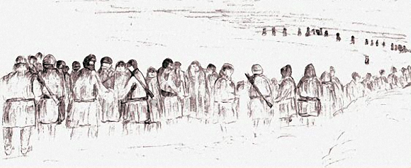
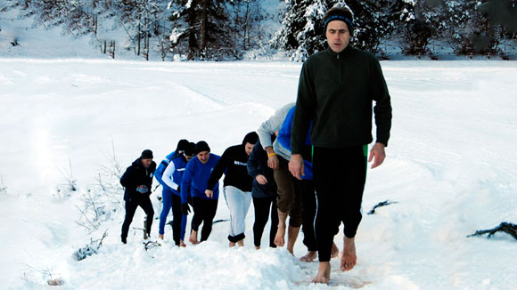
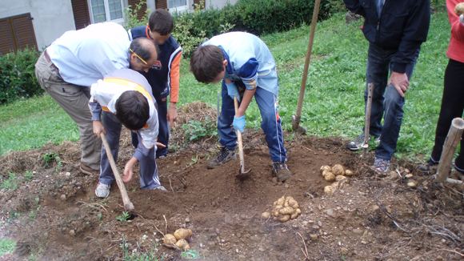

Homepage
un po' di storia
Nel Gennaio 2006, mi sono soffermato a riflettere sulla ritirata di Russia della seconda guerra mondiale. Che tipo di sensazioni avranno provato i soldati? Quanto sarà stato difficile sopportare il gelo? Alcuni di loro ce l’hanno fatta. Io potrei riuscire a capire almeno una parte delle loro percezioni?
Un giorno, al ritorno da una gita in montagna, ho tolto gli scarponi e mi sono messo a correre a piedi nudi sulla neve. Cinque chilometri di nuove sensazioni, emozioni che si mescolavano con il silenzio del bosco e con il ritmo del mio respiro nell’aria gelida.
Correre a piedi nudi sulla neve iniziava ad avere un senso. Era anche un cercare di capire come mai le guerre si ripetono, quali meccanismi le fa innescare e quali risorse gli esseri umani hanno per sopportare e sopravvivere a questi eventi.
A Roncobello (BG) abita ancora un reduce. Mi sono reso conto pian piano che quello che sentivo e che mi portava verso questa esperienza sulla neve viveva e pulsava a poche centinaia di metri da dove trascorrevo le mie vacanze.
Così da quella prima corsa in solitaria, nel 2010 ho condiviso l'esperienza con altre 32 persone e abbiamo corso insieme.
La guerra è conflitto. Senza arrivare alla guerra tra Paesi, il conflitto fa parte della vita e delle relazioni di tutti i giorni e da questo è nata l'idea di proporre laboratori sulla gestione dei conflitti e attività didattiche sulla relazione fra la terra e l’essere umano.
Nel maggio del 2009 insieme ai bambini della scuola elementare di Roncobello, abbiamo seminato un campo di patate e ne abbiamo seguito tutte le fasi fino al raccolto in autunno. Le patate riconosciute come ancoraggio alla vita durante la ritirata di Russia e come alimento essenziale per interi popoli nel corso della storia.
La sera di Capodanno 2010, il giorno prima della 1° edizione della corsa a piedi nudi sulla neve, ho organizzato una cena frugale con le patate coltivate insieme ai bambini, con semi di girasole e con una gallina bollita. La condivisione di poco cibo, essenziale e semplice, ha permesso di vivere un momento di riflessione.
L’ idea di questo sito è nata dopo l’esperienza della I°edizione della "Corsa a Piedi nudi sulla Neve" del 2 gennaio 2010. Ecco perché in questa pagina trovate foto e parole che ricordano quella esperienza.
Poi pian piano ho aggiunto i progetti che porto avanti.
Le idee e i sogni per questo sito sono tanti; la realtà è fatta però di tante cose, in primo luogo i miei limiti, oltre alla necessità di guadagnarsi da vivere con le proprie ‘mani’.
Per questo troverete ancora parti che sono nella mia testa e nel mio cuore, ma non ancora su questo sito.
Buona visione e lettura.
prossimi Eventi
Per informazioni:
Tel: 338.2965977
A PIEDI NUDI NELLA NEVE
IV° edizione
"RICORDARE PER CAPIRE: NIKOLAJEWKA INSEGNI"
Corsa a piedi nudi sulla neve - Spettacolo teatrale
Sabato 2 - Domenica 3 Marzo 2013
Aprica (SO)
Immagina non ci sia il paradiso
Prova, è facile
Nessun inferno sotto i piedi
Sopra di noi solo il cielo
Immagina che la gente viva al presente…
Immagina non ci siano Paesi
Non è difficile
Niente per cui uccidere e morire
E nessuna religione
Immagina che tutti vivano la loro vita in Pace…
Puoi dire che sono un sognatore
Ma non sono il solo
Spero che ti unirai anche tu un giorno
E che il mondo diventi uno
Immagina un mondo senza possessi
Mi chiedo se ci riesci
Senza necessità di avidità o fame
La fratellanza tra gli uomini
Immagina tutta la gente
Condividere il mondo intero..
Puoi dire che sono un sognatore
Ma non sono il solo
Spero che ti unirai anche tu un giorno